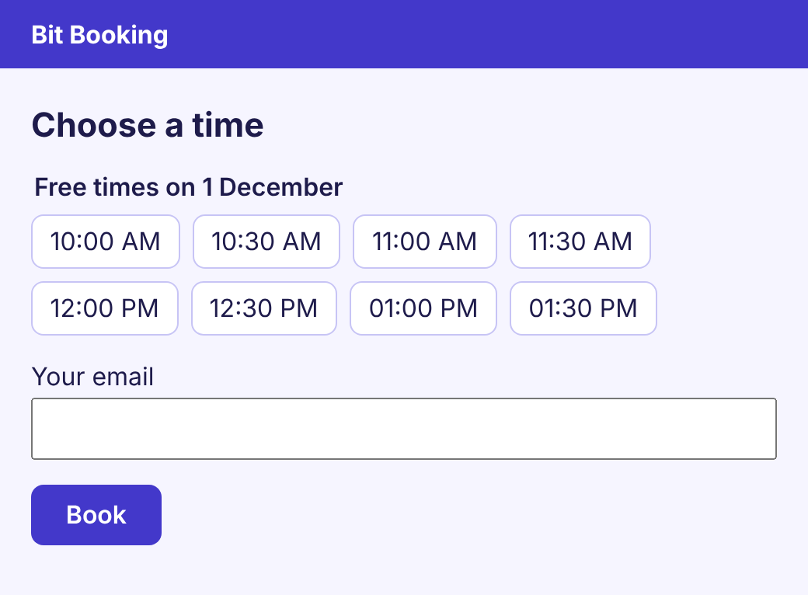
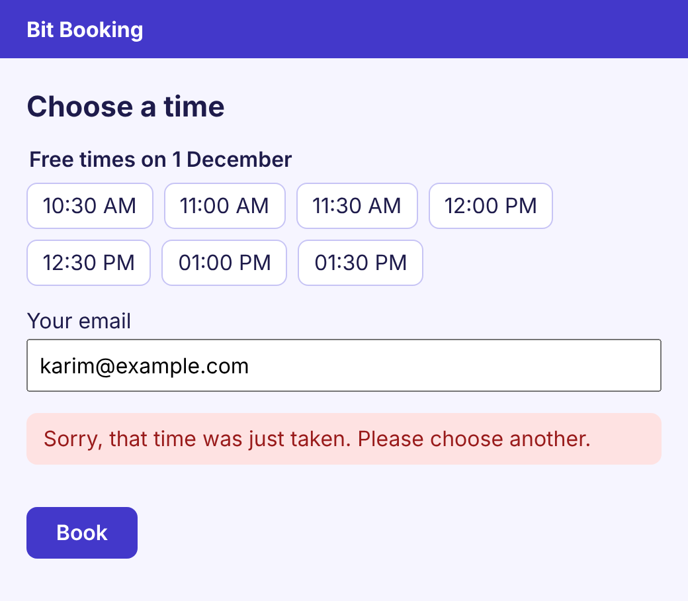

The code in this book is tested with Node.js 22. Every listing and its output is produced from the files in the book’s code repository.
JavaScript, Node.js and other names mentioned in this book are trademarks of their owners and are used for identification only.
ISBN: ———
Contents
Part 1: End to End
1From Idea to Specification
2API Contracts Between Frontend and Backend
3Full Stack with Next.js
4Authentication Across the Stack
5Payments, Email and Files
Part 2: System Design
6System Design Fundamentals
7Designing for Failure
8Data at Scale
9Six System Design Case Studies
Part 3: Delivery
10CI/CD Pipelines
11Cloud and Infrastructure as Code
12Observability and Incidents
Part 4: Leadership
13Technical Leadership and Architecture Decisions
14Estimation, Planning and Working with Product
15Interviews and Growing Your Career
16Capstone: Ship a SaaS Product
Appendix
Answers to the Exercises
1
Chapter 1
From Idea to Specification
In this chapter you will learn to
turn a vague idea into a problem with numbers you can check later
describe users by the jobs they need done, not by who they are
write user stories with acceptance criteria that a test can check
state non-functional requirements as numbers, and see what each number costs
find the rules the system must never break, and give them to the database
cut a first version that is small, useful and shippable, and fit the whole spec on one page
Books 2 and 3 taught you to build the front and the back of a product well. This book is about building the right product, end to end, and running it: from the first conversation to a system in production, with the team around it. Everything starts with a specification. Not a hundred-page document that nobody reads, but the shortest text that lets everyone agree on what to build, what not to build, and how to tell when it is done. Throughout the book we build one product, Bit Booking: an online booking service for small businesses. This chapter writes its spec.
Bit
The most expensive bug I ever fixed took ten minutes to code. It took three weeks to find, because everyone had a different idea of what “cancel” meant: the customer, the owner, and the database. One sentence in a spec would have saved all three weeks.
1.1Why write it down
A misunderstanding costs almost nothing in a conversation, a little in a spec, more in code, a lot after release, and the most after customers depend on the wrong behaviour. A spec is the cheapest place to be wrong. It does three things:
It makes you think. Writing “a customer can cancel” forces the question: until when? With a refund? Who gets told? Questions found while writing are the cheap ones.
It lets others disagree. The owner, the designer and the developer read the same sentence. If they picture different things, it shows now, not in review.
It defines done. Every story ends with criteria a test can check. “Done” stops being a feeling.
The spec is a tool for the team, not a contract against it. It changes when you learn something, and it records why. What matters is that it changes on purpose, in writing, rather than silently in someone’s head.
1.2From idea to problem
The idea arrives as a solution: “an app for booking appointments”. A spec starts one step earlier, with the problem: who suffers, how much, and how we will know it got better. Talk to five real owners before writing anything. For Bit Booking the conversations gave two numbers: owners spend about an hour a day answering booking messages, and one booking in eight is a no-show.
Those numbers become the success metrics, the reason the product exists. Three months after launch we will ask: do owners spend less time on bookings? Did no-shows fall below one in twelve, thanks to reminders? A feature that moves neither number is a feature to question.
1.3Users and their jobs
List the roles, and for each the job they hire the product to do. Bit Booking has three: the owner sets up services, staff and hours and wants to see the day at a glance; the staff member wants their own day and to mark who came; the customer wants a slot that suits them in under a minute, without creating an account.
Then walk one journey end to end, step by step: the customer opens the link from the salon’s Instagram, picks “haircut” and Mona, sees Tuesday’s free times, books 10:30, gets an email, gets a reminder the day before, comes. Every step is a screen or an email someone must build, and every arrow between steps is a place where things go wrong: the slot was taken a second ago, the email bounced, the customer is in another time zone. Journeys find the stories that a list of features misses.
1.4Stories that a test can check
A user story names who wants what, and why: “As a customer, I book a slot, so that I do not have to call.” On its own it is a promise to talk, not a specification. What makes it specific is its acceptance criteria, written as Given (the situation), When (the action) and Then (the result):
Given Mona works 10:00 to 14:00 and is booked 10:00 to 10:30, when a customer asks for a 30-minute haircut, then 10:00 is not offered and 10:30 is.
Given two customers ask for the same slot at the same moment, then exactly one booking is made, and the other customer sees that the slot is taken.
Notice that both criteria use concrete names, times and numbers, never “a valid slot” or “handles conflicts”. A criterion is good when a tester and a developer, reading it separately, would write the same test. The second criterion is also the most important sentence in the spec: it is about concurrency, and it is exactly the kind of rule that is easy to say and easy to get wrong in code.
Good stories are small enough to finish in a few days, valuable on their own, and testable. When a story is too big (“the owner manages the business”), split it by workflow step (set hours, add staff, add services) or by rule (book; book with a buffer between appointments), never by layer: “build the database for bookings” delivers nothing anyone can use.
1.5Requirements in numbers
Some requirements are about how well rather than what: speed, availability, scale, how long data is kept. They are called non-functional requirements, and they are only useful as numbers. “Fast” cannot be tested; “95% of booking pages answer in under 300 ms” can. Each number also has a cost, and a short script makes the cost visible before anyone promises it:
budget.ts
// availability: how much downtime each target allows in a 30-day monthconst minutesPerMonth = 30 * 24 * 60;
console.log("target".padEnd(9), "downtime");
for (const target of [99, 99.5, 99.9, 99.95, 99.99]) {
const down = minutesPerMonth * (1 - target / 100);
console.log(`${target}%`.padEnd(9), `${down.toFixed(1)} min/month`);
}
// load: from the business numbers in the spec to requests per secondconst businesses = 2_000;
const bookingsPerDay = 25;
const pageViewsPerBooking = 12; // browsing, choosing, booking, the emails' linksconst requestsPerPageView = 3; // the page, then the API calls it makesconst perDay = businesses * bookingsPerDay * pageViewsPerBooking * requestsPerPageView;
const average = perDay / 86_400;
console.log();
console.log(perDay.toLocaleString("en"), "requests a day");
console.log(average.toFixed(1), "average per second");
console.log((average * 4).toFixed(1), "peak per second (x4)");
// data: how much the bookings table grows in a yearconst rowsPerYear = businesses * bookingsPerDay * 365;
const bytesPerRow = 200; // the columns, the row header, and the indexes
console.log();
console.log(rowsPerYear.toLocaleString("en"), "bookings a year");
console.log(`${((rowsPerYear * bytesPerRow) / 1024 ** 3).toFixed(1)} GB`, "table size a year");
Terminal
# The non-functional requirements, as numbers$ node budget.ts
target downtime
99% 432.0 min/month
99.5% 216.0 min/month
99.9% 43.2 min/month
99.95% 21.6 min/month
99.99% 4.3 min/month
1,800,000 requests a day
20.8 average per second
83.3 peak per second (x4)
18,250,000 bookings a year
3.4 GB table size a year
Read the first table as a price list. 99.9% a month allows 43 minutes of downtime: one bad deployment, quickly rolled back. 99.99% allows four minutes: no deployment may ever take the site down, every part needs a spare, and someone must be woken at night. For a booking site for salons, 99.9% is honest. The extra nine would cost months of work and buy almost nothing.
The load is just as instructive. 2,000 businesses sound like a lot, yet the peak is under a hundred requests a second, and the table grows by 3.4 GB a year. One PostgreSQL server handles that comfortably (Book 3). Writing the numbers down is the best protection against designing for a scale the product will not see for years.
1.6Rules that must never break
Among all the sentences in a spec, a few are invariants: things that must be true always, whatever the code does, whichever server handles the request, however many customers click at once. For Bit Booking the first is “a staff member is never booked twice at the same time”. Book 3 taught that rules like this belong in the database, where no race can bypass them. PostgreSQL can state this one directly, with an exclusion constraint:
schema.sql
CREATETABLE bookings (
id bigint GENERATED ALWAYS AS IDENTITY PRIMARYKEY,
staff_id bigint NOTNULLREFERENCES staff (id),
service_id bigint NOTNULLREFERENCES services (id),
email text NOTNULL,
-- [start, end): the end is not included, so 10:00-10:30 and 10:30-11:00 do not overlap
during tstzrange NOTNULL,
status text NOTNULLDEFAULT'confirmed'CHECK (status IN ('confirmed', 'cancelled')),
-- US-2: a staff member is never booked twice at the same time; cancelled bookings free the slotCONSTRAINT no_double_booking
EXCLUDE USING gist (staff_id WITH =, during WITH &&) WHERE (status = 'confirmed')
);
The constraint reads: no two confirmed rows may have the same staff_id and overlapping (&&) times. The range [start, end) includes its start and excludes its end, so back-to-back appointments are allowed. Cancelled rows are ignored, so a cancellation frees the slot. Here is the spec’s story, checked by the database:
Terminal
# Sara books Mona at 10:00 for 30 minutes$ psql shop -c "INSERT INTO bookings (staff_id, service_id, email, during) VALUES (1, 1, 'sara@example.com', '[2026-12-01 10:00+02, 2026-12-01 10:30+02)')"
INSERT 0 1
# Karim tries Mona at 10:15: the database refuses$ psql shop -c "INSERT INTO bookings (staff_id, service_id, email, during) VALUES (1, 1, 'karim@example.com', '[2026-12-01 10:15+02, 2026-12-01 10:45+02)')"
ERROR: conflicting key value violates exclusion constraint "no_double_booking"
DETAIL: Key (staff_id, during)=(1, ["2026-12-01 08:15:00+00","2026-12-01 08:45:00+00")) conflicts with existing key (staff_id, during)=(1, ["2026-12-01 08:00:00+00","2026-12-01 08:30:00+00")).
# The same time with Omar is fine$ psql shop -c "INSERT INTO bookings (staff_id, service_id, email, during) VALUES (2, 1, 'karim@example.com', '[2026-12-01 10:15+02, 2026-12-01 10:45+02)')"
INSERT 0 1
# 10:30 with Mona is fine too: the ranges only touch$ psql shop -c "INSERT INTO bookings (staff_id, service_id, email, during) VALUES (1, 1, 'nour@example.com', '[2026-12-01 10:30+02, 2026-12-01 11:00+02)')"
INSERT 0 1
# Sara cancels, and 10:00 is free again$ psql shop -c "UPDATE bookings SET status = 'cancelled' WHERE id = 1"
UPDATE 1
$ psql shop -c "INSERT INTO bookings (staff_id, service_id, email, during) VALUES (1, 1, 'karim@example.com', '[2026-12-01 10:00+02, 2026-12-01 10:30+02)')"
INSERT 0 1
This is what turning a spec into a system looks like at its best: a sentence from the stories became one line of schema, and every future feature, every API and every bug now has to respect it. The application will still check for free slots to give friendly answers, but correctness no longer depends on that check.
1.7The first version
The full idea is always bigger than the first release. Cut it with the question: what is the smallest product that already solves the problem for some users? For Bit Booking: customers book, get an email and a reminder, and can cancel; owners see their day. That is five stories. Online payment reduces no-shows further, but reminders may be enough, and payment brings accounts, refunds and regulations. It goes in a clearly written Not in the MVP list, which is part of the spec and protects the team from “while you are at it…”.
Then build a walking skeleton first: the thinnest version of every layer, connected and deployed. One page that books one fixed slot, an API, a table, a real email, a deployment pipeline. It does almost nothing, but it proves that the pieces fit, and every later story adds flesh to a skeleton that already walks. Teams that build layer by layer discover in the last week that the pieces do not join.
1.8The one-page spec
All of this fits on one page, which is the point: a page gets read, reviewed and kept up to date. Ours is a Markdown file in the repository, next to the code, so that changing the spec is a pull request like any other:
docs/spec.md
# Bit Booking: one-page spec
**Status:** draft for review · **Owner:** product + tech lead · **Updated:** 2026-11-20
## Problem
Small businesses (salons, clinics, tutors) take bookings by phone and chat.
Owners lose about an hour a day answering, and 1 booking in 8 is a no-show.
## Users
- **Owner:** sets services, staff and opening hours; sees the day.
- **Staff:** sees their own day; marks a booking done or no-show.
- **Customer:** books, moves or cancels, without an account.
## Stories (MVP)
- **US-1** As a customer, I see free slots for a service and a staff member.
- Given Mona works 10:00-14:00 and has a booking 10:00-10:30,
when I ask for a 30-minute haircut, then 10:00 is not offered and 10:30 is.
- **US-2** As a customer, I book a slot.
- Given two customers ask for the same slot at the same time,
then exactly one booking is made and the other sees "taken".
- **US-3** As a customer, I get a confirmation email, and a reminder 24 h before.
- **US-4** As a customer, I cancel up to 2 h before, from the link in the email.
- **US-5** As an owner, I see today's bookings for every staff member.
## Not in the MVP
Online payment (deposits come in version 2), mobile apps, several branches.
## Quality
- Availability 99.9% a month; booking page p95 < 300 ms.
- 2,000 businesses in year one; 25 bookings a business a day.
- Personal data kept 2 years after the last visit, then deleted.
## Risks and open questions
- Time zones: a business and its customers may be in different zones.
- Do customers need an account to see their history? (decide by 2026-12-01)
Each section answers one question a reader will ask: why (Problem), for whom (Users), what (Stories), what not (Not in the MVP), how well (Quality), and what we do not know yet (Risks and open questions). An open question has an owner and a date; one without them is a decision nobody will make.
Review the page with the people who will be affected: the owner reads the stories, a developer reads the rules and the numbers, a designer reads the journey, and someone from support reads the cancellation rule. Each finds different holes. Twenty minutes of that review saves weeks.
Common mistakes
Mistake
What happens
Fix
Starting from the solution
A product nobody needed, built well
The problem first, with numbers
Asking about future intentions
Polite yeses that predict nothing
Ask about the last time it happened
Vague criteria (“works correctly”)
Each person tests something different
Given, When, Then, with real values
Stories split by layer
Weeks of work with nothing to show
Split by workflow step or by rule
“Fast” and “reliable” without numbers
Untestable promises, or overbuilt systems
Numbers, with their cost calculated
Invariants only in application code
Two requests at once break them
Constraints in the database
No “not in the MVP” list
The first version never ships
Write what is out, and why
A spec that never changes
The code and the document disagree
The spec in the repository, changed by pull request
Summary
A spec is the cheapest place to find a misunderstanding; it makes you think, lets others disagree, and defines done.
Start with the problem and its numbers, which become the success metrics.
Describe roles by the job they need done, and walk a journey end to end to find the stories.
A story becomes specific through acceptance criteria in Given, When, Then, with concrete values.
Non-functional requirements are numbers, and each number has a cost you can calculate.
Invariants belong in the database; an exclusion constraint makes double booking impossible.
Cut a small MVP, write what is out, start from a walking skeleton, and keep the spec on one page in the repository.
Quick check answers: 1. For example: “Given Sara has a booking tomorrow at 10:00, when she opens the cancel link at 07:59 tomorrow, then the booking is cancelled, the slot is offered to others, and Mona sees it gone; when she opens it at 08:01, then she sees that bookings can only be cancelled up to 2 hours before.” 2. It delivers nothing a user can use or a test from the spec can check, and it hides the real question (what the table must guarantee) until stories need it. Split by user-visible steps instead, and let each story add the columns it needs. 3. Because opinions about the future are polite guesses: nobody pays for a yes. Ask about past behaviour: “How did customers book last week? Tell me about the last booking that went wrong. How long did you spend answering messages yesterday?”
Practice projects
Each project produces documents and code that you keep. Review every spec with at least one other person before calling it done.
Project 1.1 · Easy
Criteria for the rest
Write full acceptance criteria for US-3, US-4 and US-5 of the spec.
You will practise: Given, When, Then; edge cases; concrete values.
For each story write at least two criteria: the normal case and one edge case.
For US-3, decide what happens when a booking is made less than 24 hours ahead.
For US-4, cover a cancellation exactly at the 2-hour limit.
Ask someone to read one criterion and describe the test they would write; compare with yours.
Hint: edge cases live at boundaries (exactly 2 hours, midnight, the last slot of the day) and at the arrows of the journey (the email bounced, the slot was just taken).
Project 1.2 · Medium
Opening hours in the database
Extend the schema so that bookings outside a staff member’s working hours are impossible.
You will practise: turning rules into constraints, ranges, and testing rules in SQL.
Add a table shifts (staff_id, during tstzrange), with an exclusion constraint so that one person’s shifts do not overlap.
Write a trigger that refuses a confirmed booking whose range is not contained (<@) in one of the staff member’s shifts.
Record a transcript like rules.sh: a booking inside a shift, one that crosses its end, and one on a day off.
Write down which part of the rule you left to the application, and why.
Hint: constraints cannot read other tables, so containment in a shift needs a trigger; keep the trigger to that one check.
Project 1.3 · Challenge
A spec for your own idea
Take a product idea of your own from conversations to a reviewed one-page spec.
You will practise: interviewing, metrics, scoping, and estimating cost from numbers.
Interview five people who have the problem, asking only about the last time it happened. Write what you heard.
Write the problem with two numbers, and the success metrics that would show it solved.
Write five MVP stories with criteria, and a “not in the MVP” list at least as long.
Adapt budget.ts to your numbers, and write the quality section from its output.
Find at least one invariant and express it as a database constraint, with a transcript.
Have the spec reviewed by two people with different roles, and record what changed.
Hint: if your “not in the MVP” list is shorter than your MVP, your first version is probably too big.
Exercises
Easy Turn each into a measurable requirement: “the site should be fast”, “we must not lose data”, “it should handle lots of users”.
Easy Why is the booking range [start, end) rather than [start, end]? What would go wrong with the second?
Medium Change budget.ts for 20,000 businesses and a peak factor of 10. What changes in the design, and what does not?
Medium A salon wants a 10-minute cleaning gap after every haircut. Where does this rule go: the spec, the schema, the application? Write the criterion and propose the change.
Challenge The exclusion constraint guarantees no double booking. Describe what the customer sees when two people book the last slot at the same moment, from the click to the screen, and write the criterion for the losing customer’s experience.
Answers to the exercises are at the end of the book and in the book’s code repository.
Coming up in Chapter 2
The spec says what to build; the next chapter decides how the front end and the back end talk about it. API contracts: one description of every endpoint, from which both sides are checked.
2
Chapter 2
API Contracts Between Frontend and Backend
In this chapter you will learn to
describe an API once, in OpenAPI, so that both sides build against the same promise
choose between writing the contract first and generating it from code
generate TypeScript types from the contract for the server and the client
make the server enforce the contract on every request, and prove it on every response
call the API with a client whose every path, parameter and answer is typed
change a contract without breaking the clients that already depend on it
In Book 2 the front end checked every answer from the server with a schema; in Book 3 the server validated every request. Both sides were careful, but each was careful on its own: nothing stopped the server from renaming a field that the front end read. When one team builds both sides, and even more when a mobile app joins later, the sides need one shared description of what they say to each other. That description is the API contract. This chapter writes it for Bit Booking’s first two endpoints, and makes the type checker, the server and the tests all hold it.
Bit
I once watched a release fail because the server started sending startsAt instead of starts_at. Both teams had tests, and every test passed. Each side was testing its own idea of the API. A contract is the test they share.
2.1What goes wrong without one
Without a contract the API is defined by whatever the server happens to do today. The front end learns it by reading the server’s code or watching the network tab, and copies it into its own types by hand. Every copy is a place where the two can drift apart, and drift is silent: the field comes back undefined, the page shows an empty time, and nobody notices until a customer does.
The typical bugs are always the same few: a field renamed or removed, a field that was optional becoming required, a new enum value the client does not know, an error with a different shape than the client expects, a number sent as a string. Every one of them can be caught before release, but only if both sides agree, in a form a machine can check, on what the API is.
2.2The contract
The common format for HTTP APIs is OpenAPI: a YAML (or JSON) document listing every path, its parameters, its request body and every possible response, with JSON Schema for the data. Here are Bit Booking’s two operations, listing the free slots and making a booking:
openapi.yaml
/bookings:
post:
operationId: createBooking
summary: Book a slot
requestBody:
required: true
content:
application/json:
schema: { $ref: "#/components/schemas/BookingIn" }
responses:
"201":
description: The booking
content:
application/json:
schema: { $ref: "#/components/schemas/Booking" }
"409":
description: The slot is already booked
content:
application/problem+json:
schema: { $ref: "#/components/schemas/Problem" }
"422":
description: The request is invalid
content:
application/problem+json:
schema: { $ref: "#/components/schemas/Problem" }
Notice what the contract promises beyond the happy path: a taken slot is a 409, invalid input a 422, and both come as application/problem+json, the Problem Details of Book 3. Errors are part of the API, and clients need to handle them as much as successes. The data shapes live once, under components, and are referenced from every operation that uses them:
additionalProperties: false says the object has exactly these fields, no more; required says which ones are always there; format adds meaning to strings (a date-time, an email). Every word of this is a promise, and the next sections make sure it is kept.
2.3Contract first, or code first
There are two ways to get a contract. Code first: write the server with schemas, as in Book 3, and generate the OpenAPI document from it. Contract first: write the document, review it, and build both sides from it.
Code first is less work for a small team that owns both sides, and the document can never fall behind the server. Contract first is better when several clients depend on the API, or when the front end should start before the server exists: the contract is agreed in a review, the front end works against it (even against a mock server generated from it), and the server is checked against it. Bit Booking will have a web app, an owner’s dashboard and later a mobile app, so we write the contract first. Either way, the rule is the same: one source of truth, and everything else generated or checked from it.
2.4Types for both sides
The contract already describes every shape, so nobody should type them again by hand. openapi-typescript reads the document and writes TypeScript types for every path, parameter, body and response:
The generated file is never edited: when the contract changes, run the script again, and the type checker shows every place in the code that the change affects. (One practical note: the generator uses TypeScript 5’s compiler interface, so this book’s projects use TypeScript 5.9 rather than the native TypeScript 7 of Books 2 and 3. Tools catch up; check the generator’s notes before upgrading.)
2.5The server keeps the promise
The server imports the generated types, and validates requests with the contract’s own schemas, read from the same file, so the rules about what a valid booking looks like exist in exactly one place:
src/app.ts
// types generated from the same contracttype Booking = components["schemas"]["Booking"];
type BookingIn = components["schemas"]["BookingIn"];
type Problem = components["schemas"]["Problem"];
// the contract is the source: its schemas validate every requestconst contract = parse(readFileSync("openapi.yaml", "utf8"));
const schemas = contract.components.schemas;
Fastify validates the body with schemas.BookingIn before the handler runs, and the type Booking makes the compiler refuse an object that does not match the contract’s Booking: a missing ends_at, or a status of "canceled", would not compile. What the type checker cannot see is how errors leave the server. The contract says every error is a Problem, so an error handler makes it so:
Types check the code; only running it checks the answers. A contract test sends real requests to the server and checks each response against the document: the status must be one the contract lists for that operation, the content type must match, and the body must validate against the documented schema:
test/contract.test.ts
function check(method: string, path: string, res: LightMyRequestResponse) {
const responses = contract.paths[path]?.[method]?.responses ?? {};
const doc = responses[res.statusCode];
assert.ok(
doc,
`${method.toUpperCase()} ${path} ${res.statusCode} is not in the contract`,
);
const [type] = Object.keys(doc.content);
assert.equal(String(res.headers["content-type"]).split(";")[0], type);
// the response's schema, found in the contract by its JSON pointerconst ref = `/paths/${pointer(path)}/${method}/responses/${res.statusCode}/content/${pointer(type!)}/schema`;
const validate = ajv.getSchema(`api#${ref}`)!;
assert.ok(validate(res.json()), ajv.errorsText(validate.errors));
}
The function needs no knowledge of any particular endpoint: it looks up the response in the contract by method, path and status, and validates with Ajv, a JSON Schema validator. Each test is then one request and one call to check:
test/contract.test.ts
test("answers 409 with a Problem when the slot is taken", async () => {
const app = buildApp();
await app.inject({ method: "POST", url: "/bookings", body: booking });
const res = await app.inject({ method: "POST", url: "/bookings", body: booking });
assert.equal(res.statusCode, 409);
check("post", "/bookings", res);
});
Terminal
# The contract test$ npm test
✔ lists free slots in the documented shape (…ms)
✔ creates a booking in the documented shape (…ms)
✔ answers 409 with a Problem when the slot is taken (…ms)
✔ answers 422 with a Problem when the email is invalid (…ms)
ℹ tests 4
ℹ pass 4
ℹ fail 0
To see what the test is for, run it with the error handler switched off (BUG=errors), which is exactly the server a busy developer might ship: Fastify answers an invalid email with its own format and a 400.
Terminal
# The same test, with Fastify's own error format$ BUG=errors npm test
✖ answers 422 with a Problem when the email is invalid (…ms)
ℹ pass 3
ℹ fail 1
AssertionError [ERR_ASSERTION]: POST /bookings 400 is not in the contract
The message says exactly what is wrong: the server answered with a status the contract does not have. A client written from the contract would have looked for a 422 Problem and found neither. In a real project this test runs in CI, and the bug never reaches a client.
2.7A typed client
On the front end, openapi-fetch turns the generated types into a client. It is a thin layer over fetch, but every call is checked against the contract: the path must exist, the parameters and body must have the documented shape, and the answer comes back typed as data on success or error on a documented error:
# The typed client against the running server$ node src/demo.ts
first free slots: [
'2026-12-01T08:00:00.000Z',
'2026-12-01T08:30:00.000Z',
'2026-12-01T09:00:00.000Z'
]
first booking: 201 1 confirmed
same slot again: 409 Slot taken
The second booking’s error is typed as a Problem, because the contract says a 409 is one; the client does not need its own copy of that knowledge. And when someone misreads the contract, the mistake is found before the code runs:
Terminal
# A misspelt field, caught before the code runs$ npx tsc
src/wrong.ts(6,3): This comparison appears to be unintentional because the types '"confirmed" | "cancelled"' and '"canceled"' have no overlap.
src/wrong.ts(6,35): Property 'start_at' does not exist on type '{ id: number; staff_id: number; starts_at: string; ends_at: string; email: string; status: "confirmed" | "cancelled"; }'. Did you mean 'starts_at'?
Two mistakes in one line: start_at for starts_at, and the American spelling "canceled" for the contract’s "cancelled". The second would have compiled in plain JavaScript and silently never matched. The compiler even suggests the right field name, read from the contract.
2.8Changing a contract safely
Once a client depends on the API, the contract is a promise to that client. Some changes keep it, and some break it:
Safe: adding an operation; adding an optional request field; adding a response field (if clients ignore unknown fields, which they should).
Breaking: removing or renaming an operation or a field; making a request field required; changing a type; adding a value to a response enum, which a client with an exhaustive switch may not handle.
Rules on a page are easy to forget under a deadline, so a short script compares two versions of the contract and lists what would break:
breaking.ts
for (const [path, item] of Object.entries<any>(before.paths)) {
for (const [method, op] of Object.entries<any>(item)) {
const name = `${method.toUpperCase()} ${path}`;
const next = after.paths[path]?.[method];
if (!next) {
found.push(`removed: ${name}`);
continue;
}
// a field the old clients do not send, now requiredconst oldIn = resolve(
before,
op.requestBody?.content["application/json"]?.schema,
);
const newIn = resolve(
after,
next.requestBody?.content["application/json"]?.schema,
);
for (const field of newIn.required ?? []) {
if (!oldIn.required?.includes(field))
found.push(`${name}: new required request field "${field}"`);
}
for (const [status, res] of Object.entries<any>(op.responses)) {
const [type] = Object.keys(res.content ?? {});
const oldOut = resolve(before, res.content?.[type!]?.schema);
const newOut = resolve(
after,
next.responses[status]?.content?.[type!]?.schema,
);
for (const [field, schema] of Object.entries(oldOut.properties ?? {})) {
// a field the old clients read, now goneif (!newOut.properties?.[field])
found.push(`${name} ${status}: response field removed "${field}"`);
// a value the old clients have never seenconst added = (newOut.properties?.[field]?.enum ?? []).filter(
(v) => !schema.enum?.includes(v),
);
if (schema.enum && added.length)
found.push(
`${name} ${status}: "${field}" new value clients may not handle: ${added.join(", ")}`,
);
}
}
}
}
Here is a next version that looks harmless in review (a phone number, a tidier booking, a new status), checked against the current one:
Terminal
# What would break if we published the next version$ node breaking.ts openapi.yaml openapi.next.yaml
3 breaking changes:
- POST /bookings: new required request field "phone"
- POST /bookings 201: response field removed "ends_at"
- POST /bookings 201: "status" new value clients may not handle: no_show
The script exits with an error, so in CI it blocks the change until someone decides. The usual ways forward are, in order of preference: make the change compatible (phone optional at first); expand and contract (add the new field, move every client to it, and only then remove the old one); and as a last resort, a new version of the operation (/v2/bookings) that lives beside the old one until the last client has moved. Tools such as oasdiff do this comparison in far more depth; the point of writing a small one is to see that it is only a careful walk over two documents.
Common mistakes
Mistake
What happens
Fix
Types copied by hand on each side
They drift; a renamed field becomes undefined
Generate them from the contract
Only the happy path in the contract
Clients cannot handle errors they were never told about
Document every error status, with its shape
Validation rules repeated in code
The contract and the server disagree
Validate with the contract’s own schemas
No test of the actual responses
The server breaks the contract while compiling fine
A contract test on every response
Editing generated files
The next generation erases the change
Change the contract, then generate
Removing or renaming a field in place
Old clients break, often silently
Expand and contract, or a new version
Strict clients that reject unknown fields
Every safe addition becomes breaking
Ignore unknown fields on the client
Contract changed in the same PR as the code
The promise is reviewed as a detail
Contract first, reviewed by both sides
Summary
An API contract is one shared, machine-checkable description of what the front end and the back end say to each other.
OpenAPI lists every path, parameter, body and response, errors included, with JSON Schema for the data.
Write the contract first when several clients depend on it; generate it from code when one team owns both sides. Either way, keep one source.
Generate types for both sides; the server validates with the contract’s own schemas.
A contract test checks every real response’s status, content type and body against the document.
A typed client makes wrong paths, fields and values compile errors.
Know which changes are breaking, check them automatically, and prefer expand and contract to removing in place.
Quick check answers: 1. Because types only check what the compiler can see. The error handler, the content type, the status code, the validation the framework does, and values computed at run time (a date in the wrong format, an extra field added by a library) are invisible to TypeScript; the contract test runs the real server and checks what really leaves it. 2. Because a client written from the contract only knows the documented statuses: it has no code for a 400, and no type for its body. An undocumented status is a broken promise even if the body happens to look reasonable. 3. When one team owns both sides and there is one client: code first is less work, and the document can never fall behind the server. It also suits an existing API that has no contract yet: generate one, review it, and from then on keep it checked.
Practice projects
Each project grows Bit Booking’s contract. In every one, change openapi.yaml first, regenerate the types, and make the contract test and the breaking-change check pass.
Project 2.1 · Easy
Cancel a booking
Add POST /bookings/{id}/cancel to the contract and the server.
You will practise: path parameters, documenting every error, and contract tests.
Describe the operation: a 200 with the cancelled Booking, a 404 Problem for an unknown id, and a 409 Problem when it is already cancelled.
Regenerate the types and implement the route.
Write a contract test for each of the three statuses.
Run the breaking-change check against the old contract: it should report nothing.
Hint: the path in the contract is /bookings/{id}/cancel, and in check you pass the same template, not the concrete URL.
Project 2.2 · Medium
A mock server for the front end
Let the front end work before the server exists, with answers taken from the contract.
You will practise: examples in OpenAPI, mock servers, and keeping mocks honest.
Add an example to every response in the contract.
Write a small server that, for any request, finds the operation in the contract and answers with its documented example (or an error example chosen by a header such as Prefer: code=409).
Point the typed client at the mock and run the demo.
Run the contract test against the mock too: if the examples do not match their own schemas, it fails.
Hint: tools such as Prism do this; writing a small one shows how little is needed, and the contract test keeps the examples truthful.
Project 2.3 · Challenge
Ship a breaking change safely
Make phone required for new bookings without breaking any client that exists today.
You will practise: expand and contract, versioning, and planning a migration.
Step 1 (expand): add phone as optional; the check reports nothing. Release.
Step 2: update the client to always send it; add a metric counting bookings made without it.
Step 3: decide, with numbers from the metric, when the old clients are gone.
Step 4 (contract): make it required, and accept the check’s report explicitly in the pull request.
Write the whole plan as a short decision record, with dates.
Hint: for a mobile app, step 3 is measured in weeks or months; the metric turns “I think everyone updated” into a fact.
Exercises
Easy Classify each change as safe or breaking: adding GET /staff; renaming email to customer_email in the response; adding an optional notes to BookingIn; changing id from integer to string.
Easy Why does the contract describe the 409 and 422 responses, when the client could simply show any error?
Medium The contract test validates bodies with additionalProperties: false in Booking. What happens if a developer adds a field to the server’s response without changing the contract? Is that what you want?
Medium Extend breaking.ts to report a response field whose type changed (for example from integer to string). Which other changes does it still miss?
Challenge A client has a switch over status with cases for confirmed and cancelled. Write it so that a new value from the server neither crashes the page nor is silently ignored, and explain how this makes adding enum values safer.
Answers to the exercises are at the end of the book and in the book’s code repository.
Coming up in Chapter 3
A contract joins two separate applications. The next chapter puts both sides in one project: full stack with Next.js, where server and client code live together, and the contract becomes a function call.
3
Chapter 3
Full Stack with Next.js
In this chapter you will learn to
decide when the front end and the back end belong in one project
keep database code and secrets on the server, and let the build enforce it
read data in Server Components and write it with Server Actions
turn a refusal from the database into a clear, fresh answer on the screen
serve the same business function to the web form and to other clients
draw the boundaries that keep a full-stack codebase easy to change
In the last chapter the front end and the back end were two applications joined by a contract. That is the right shape when several clients share an API, or when separate teams own each side. But for a product’s own web app, built by one team, the two halves change together all the time, and every change crosses the network, the contract and two deployments. A full-stack framework such as Next.js puts both sides in one project: the page and the query that feeds it live a few lines apart, and calling the server is calling a function. This chapter builds Bit Booking’s booking page that way, on the PostgreSQL schema of Chapter 1.
Bit
Book 2 showed Next.js as a way to render pages on the server. Here we use it for the whole product: database, rules, forms and API. Same tool, a much bigger job.
3.1One project, both sides
Putting both sides together removes a lot of ceremony. There is no API to design for the page’s own needs, no client to generate, no second deployment to keep in step: a type change in a query is a compile error in the component that shows it. What does not go away is the network. The code still runs in two places, the server and the browser, and everything the browser sends can be forged. A full-stack framework makes the boundary easier to cross, which also makes it easier to forget. Most of this chapter is about keeping it visible.
The project is an ordinary Next.js app with fixed versions, because every listing in the book must build exactly as printed:
server-only is a tiny package with a big job, shown in the next section, and output: "standalone" in next.config.ts makes the build produce a self-contained server, ready for the container of Chapter 10. Here is what next build makes of the app:
Terminal
# Build for production$ npm run build
Route (app)
┌ ƒ /
├ ○ /_not-found
├ ƒ /api/slots
├ ƒ /book/[staff]
└ ƒ /booking/[id]
○ (Static) prerendered as static content
ƒ (Dynamic) server-rendered on demand
Every route is ƒ, rendered on demand: free times change with every booking, so nothing here may be served from a page built in advance.
3.2What only the server may touch
The database connection holds a password, and the queries hold the business’s rules. Neither may ever reach the browser. In Next.js, a module ends up in the browser’s bundle if any Client Component imports it, directly or through another file, and nothing in TypeScript prevents that. So the database module says so itself, on its first line:
lib/db.ts
// server-only: importing this file from a Client Component fails the buildimport"server-only";
import pg from"pg";
pg.types.setTypeParser(pg.types.builtins.INT8, (value) => Number(value));
// one pool per process, kept on globalThis: Next reloads modules in developmentconst saved = globalThis as unknown as { pool?: pg.Pool };
exportconst pool = (saved.pool ??= new pg.Pool({
connectionString: process.env.DATABASE_URL,
}));
Importing server-only does nothing on the server, and makes the build fail if the file is ever pulled into the browser. To see it work, a Client Component imports the pool by mistake:
Terminal
# A Client Component imports the database$ npm run build
Error: You're importing a module that depends on "server-only". This API is only available in Server Components in the App Router, but you are using it in the Pages Router.
1 | // server-only: importing this file from a Client Component fails the build
> 2 | import "server-only";
Client Component Browser:
./lib/db.ts [Client Component Browser]
./app/leak/Leak.tsx [Client Component Browser]
The build stops and prints the chain of imports that led there. (The message mentions the Pages Router because Next.js reuses one error for every place where server-only code is not allowed.) The same rule applies to settings: DATABASE_URL is read only in this file, and only variables named NEXT_PUBLIC_… are ever copied into the browser’s code. Never give a secret that prefix.
3.3Reading with Server Components
The free times come from one query. The database generates the day’s slots in the business’s own time zone (the warning of Chapter 1), and keeps those that overlap no confirmed booking:
lib/bookings.ts
exportasyncfunction freeSlots(staffId: number, date: string): Promise<Slot[]> {
const { rows } = await pool.query<{ starts_at: Date; ends_at: Date }>(
`SELECT lower(slot) AS starts_at, upper(slot) AS ends_at
FROM generate_series(($2::date + time '10:00') AT TIME ZONE 'Africa/Cairo',
($2::date + time '13:30') AT TIME ZONE 'Africa/Cairo',
interval '30 minutes') AS t (start),
tstzrange(start, start + interval '30 minutes') AS slot
WHERE NOT EXISTS (SELECT 1 FROM bookings b
WHERE b.staff_id = $1 AND b.status = 'confirmed'
AND b.during && slot)
ORDER BY 1`,
[staffId, date],
);
return rows.map((r) => ({
starts_at: r.starts_at.toISOString(),
ends_at: r.ends_at.toISOString(),
}));
}
A Server Component calls it like any other function. It runs on the server, awaits the query, and sends the browser the finished HTML plus the data the interactive part needs:
app/book/[staff]/page.tsx
import { freeSlots } from "@/lib/bookings";
import { BookForm } from "./BookForm";
type Props = {
params: Promise<{ staff: string }>;
searchParams: Promise<{ date?: string }>;
};
// a Server Component: it runs on the server and reads the database directly
export default async function BookPage({ params, searchParams }: Props) {
const staffId = Number((await params).staff);
const { date = "2026-12-01" } = await searchParams;
const slots = await freeSlots(staffId, date);
return (
<main>
<h1>Choose a time</h1>
{slots.length ? (
<BookForm staffId={staffId} slots={slots} />
) : (
<p>No free times on this day.</p>
)}
</main>
);
}
localhost:3000/book/1560px

Figure 3.1: The booking page. The times were computed by PostgreSQL in Cairo time, and the page was rendered on the server.
Notice what crosses into BookForm: an id and a list of plain objects. Props of a Client Component are serialised and sent to the browser, so they must be plain data (no functions, no database rows with hidden fields), and everything in them is visible to anyone who opens the page’s source. Choosing those props is choosing what to publish.
3.4Writing with a Server Action
Booking is one function too. It inserts the row, and it turns the exclusion constraint’s refusal into an ordinary result instead of an exception, because “taken” is an expected outcome, not a failure:
The form calls it through a Server Action: a function marked "use server" that the browser can call, which Next.js turns into a POST request behind the scenes. It is easy to read it as an internal function call. It is not: anyone can send that request with any data. So the action does exactly what an API handler in Book 3 did, it validates every field, then calls the business function, then decides the answer:
app/book/actions.ts
const Input = z.object({
staffId: z.coerce.number().int().positive(),
startsAt: z.iso.datetime(),
email: z.email().max(254),
});
exporttype BookState = { error?: string; email?: string };
// a Server Action: called by the form, on the server, with the checks of any APIexportasyncfunction bookAction(
_previous: BookState,
form: FormData,
): Promise<BookState> {
const parsed = Input.safeParse(Object.fromEntries(form));
const email = String(form.get("email") ?? "");
if (!parsed.success)
return { error: "Please choose a time and write a valid email.", email };
const result = await book(parsed.data);
// the free times changed either way: render the page again with the answer
revalidatePath(`/book/${parsed.data.staffId}`);
if (!result.ok)
return {
error: "Sorry, that time was just taken. Please choose another.",
email,
};
redirect(`/booking/${result.id}`);
}
The form is a Client Component only because it shows a pending state and the error. useActionState calls the action with the form’s data and keeps what it returns:
The form is a real HTML form with a real action, so it even works before JavaScript has loaded; JavaScript only makes it nicer. On success the action redirects to the confirmation page, another Server Component that reads the booking back from the database:
localhost:3000/booking/1560px
Figure 3.2: Sara’s booking, read back from PostgreSQL after the redirect.
3.5When two customers want the same time
Karim opened the same page a minute before Sara booked, and his page still offers 10:00. He chooses it and presses Book. His request reaches the server, passes validation, and the insert fails on the constraint. The action returns the message, and because it calls revalidatePath whatever the result, the page is rendered again with the answer:
localhost:3000/book/1560px

Figure 3.3: Karim’s page after his attempt: the message, his email kept, and a fresh list in which 10:00 no longer appears.
This is the criterion we wrote in Chapter 1, now visible on a screen: exactly one booking is made, and the other customer is told, kindly, with the information to choose again. Nothing in the page had to know about concurrency; the database decided, and each layer passed its answer up in its own words: an error code, a result, a message.
3.6The second door
The web form is not the only client. The mobile app planned in the spec, and any partner integration, need the free times through the public API that Chapter 2 described in its contract. A route handler serves it from the same project, calling the same function:
app/api/slots/route.ts
import { freeSlots } from"@/lib/bookings";
// the same function behind a second door: Chapter 2's public APIexportasyncfunction GET(request: Request) {
const query = new URL(request.url).searchParams;
const staffId = Number(query.get("staff_id"));
const date = query.get("date") ?? "";
if (
!Number.isInteger(staffId) ||
staffId < 1 ||
!/^\d{4}-\d{2}-\d{2}$/.test(date)
) {
const problem = { title: "Invalid request", status: 422 };
return Response.json(problem, {
status: 422,
headers: { "content-type": "application/problem+json" },
});
}
return Response.json({ data: await freeSlots(staffId, date) });
}
Terminal
# The same slots through the API$ curl -s 'localhost:3000/api/slots?staff_id=1&date=2026-12-01' | jq -c '.data[:2]'
[{"starts_at":"2026-12-01T08:00:00.000Z","ends_at":"2026-12-01T08:30:00.000Z"},{"starts_at":"2026-12-01T08:30:00.000Z","ends_at":"2026-12-01T09:00:00.000Z"}]
# After the bookings in the browser$ curl -s 'localhost:3000/api/slots?staff_id=1&date=2026-12-01' | jq -c '.data[:2]'
[{"starts_at":"2026-12-01T08:30:00.000Z","ends_at":"2026-12-01T09:00:00.000Z"},{"starts_at":"2026-12-01T09:00:00.000Z","ends_at":"2026-12-01T09:30:00.000Z"}]
# What the database holds$ psql shop -c 'SELECT id, staff_id, email, lower(during) AS starts_at FROM bookings'
id | staff_id | email | starts_at
----+----------+------------------+------------------------
1 | 1 | sara@example.com | 2026-12-01 08:00:00+00
(1 row)
The answer has the shape the contract promised, and after Sara’s booking 10:00 is gone here too, because both doors open onto one function and one database. That is the design to aim for: business functions in lib/, and thin doors in app/ (pages, actions, route handlers) that only translate between their callers and those functions. The contract test of Chapter 2 can run against /api/slots unchanged.
3.7Boundaries in a full-stack codebase
The convenience of one project becomes a tangle if everything may import everything. Three rules keep Bit Booking’s code in shape as it grows:
Folders by role.lib/ holds the business functions and data access, marked server-only; app/ holds the doors; shared code that must run in the browser (such as lib/time.ts) has no server imports at all.
Plain data across the line. What a Server Component passes to a Client Component, and what an action returns, are small, serialisable objects chosen on purpose, never whole database rows.
One function per business action. The page, the action and the route handler call book(); none of them writes its own INSERT. When the rule changes, it changes once.
And know when to split. If the API grows into a product of its own, with its own team, its own scaling or other consumers that matter more than the web app, move lib/ into a separate service behind the contract of Chapter 2. Because the doors were thin, that move is mostly cutting and pasting.
Common mistakes
Mistake
What happens
Fix
Database module without server-only
One wrong import ships secrets and queries to the browser
Mark it; the build refuses the import
A secret in a NEXT_PUBLIC_ variable
It is in every visitor’s JavaScript
Server-only names for secrets
Server Actions without validation
Anyone posts anything
Validate as in any API handler
Whole rows passed as props
Hidden fields published in the page
Pass small objects chosen on purpose
Queries written in pages and actions
Rules duplicated and drifting
Business functions in lib/
Expected outcomes thrown as errors
Generic error pages instead of answers
Return results; throw only for the unexpected
No refresh after a write
The page shows times that are gone
revalidatePath after every change
Prerendering pages with live data
Customers see a stale schedule
Render on demand where data changes
Summary
A full-stack framework puts both sides in one project; the network boundary remains, and must stay visible.
Mark data access server-only, keep secrets out of NEXT_PUBLIC_, and let the build enforce both.
Server Components read data directly; what they pass to Client Components is published plain data.
A Server Action is a public endpoint: validate, call the business function, decide the answer.
Turn the database’s refusal into a result, and revalidate so the page shows the truth.
Serve other clients through a route handler that calls the same function, under the same contract.
Keep business functions in lib/ and thin doors in app/, so the back end can be split out when it needs to be.
Quick check answers: 1. To make the rule permanent rather than accidental. Today nothing imports it from the browser; tomorrow someone adds a Client Component that imports a helper that imports the pool, and without the marker the build happily bundles the module and the connection setup for the browser. With it, that change fails the build, the day it is made. 2. A Server Action is an HTTP endpoint. Anyone can find its id in the page and send it their own form data: a nonsense date, another staff member’s id, a ten-megabyte email. “Only our form calls it” describes the intended caller, not the possible ones. 3. Because a taken slot is a normal, expected outcome of a booking attempt, and the caller must handle it: the action shows a message, the route handler would answer 409. Exceptions are for the unexpected, and an uncaught one turns into a generic error page. Returning a result also makes the possibility visible in the function’s type, so no caller can forget it.
Practice projects
Each project extends the Next.js app. Keep business logic in lib/, keep the doors thin, and try every change both in the browser and through the API.
Project 3.1 · Easy
Choose the day
Let the customer move between days on the booking page.
You will practise: search parameters, Server Components, and links that keep state in the address.
Show the date in the page title, and add “previous day” and “next day” links that change ?date=.
Default to today in Cairo time, not the server’s time zone.
Refuse dates in the past and more than 60 days ahead, in lib/, so the API refuses them too.
Hint: compute “today in Cairo” with Intl.DateTimeFormat("en-CA", { timeZone: "Africa/Cairo" }), which formats dates as YYYY-MM-DD.
Project 3.2 · Medium
The owner’s day
Build US-5: a page listing today’s bookings for every staff member, with a cancel button.
You will practise: reading joined data, a second Server Action, and revalidation across pages.
Add bookingsForDay(date) to lib/bookings.ts, grouped by staff member.
Render it at /owner as a Server Component.
Add a cancel(id) function and a Server Action that calls it, and revalidate both /owner and the booking page.
Check that a cancelled time reappears for customers immediately.
Hint: anyone can call the cancel action; write a note in the code that the next chapter must add an owner check before this goes live.
Project 3.3 · Challenge
Test the whole stack
Prove the booking flow with automated tests at three levels.
You will practise: testing business functions against PostgreSQL, contract tests for route handlers, and end-to-end tests with Playwright.
Test freeSlots and book against a test database, including the taken case.
Run Chapter 2’s contract test against /api/slots of the running app.
Write a Playwright test for the two-customer story of section 3.5, with two browser contexts.
Run all three in one command, as CI would.
Hint: the screenshots in this chapter were made by exactly such a script: open the page twice before the first booking, then submit both.
Exercises
Easy Which of these may a Client Component import: lib/time.ts, lib/db.ts, lib/bookings.ts, the type Slot from lib/bookings.ts? Explain the last one.
Easy Why does the slot query generate times with AT TIME ZONE 'Africa/Cairo' rather than using the server’s clock?
Medium Remove revalidatePath from the action. Describe exactly what Karim sees after his failed attempt, and why that is worse.
Medium The confirmation page is at /booking/1. What is wrong with that address for a real product, and how would you fix it?
Challenge Bit Booking grows: the mobile app sends ten times more traffic than the website, and a separate team will own it. Describe what you would move out of the Next.js project, what stays, and the order of the steps.
Answers to the exercises are at the end of the book and in the book’s code repository.
Coming up in Chapter 4
Anyone can still cancel anyone’s booking. The next chapter adds identity across the whole stack: owners and staff who sign in, customers who do not, and the checks that run on every door.
Appendix
Answers to the Exercises
Try every exercise yourself before you look here. When your answer differs from this one, that is not necessarily wrong: most problems have several good solutions. If yours handles normal and unusual cases, and you can explain your choices to a colleague, it is a good answer. The full, tested code for every answer is in the book’s code repository.
Chapter 1
“Fast”: 95% of booking pages answer in under 300 ms, and 99% in under 1 s, measured at the server over a day. “Not lose data”: a confirmed booking survives the loss of any one server; backups every hour, kept 30 days, and a restore tried every month (at most one hour of data lost, back online within four hours). “Lots of users”: 2,000 businesses and 85 requests a second at peak in year one, with a test showing the system handles four times that. Each one now names a number, how it is measured, and therefore what must be built.
Because back-to-back appointments touch at one instant. With [start, end), 10:00–10:30 and 10:30–11:00 share no instant, so both can be booked. With [start, end], both contain 10:30 exactly, so the exclusion constraint would see them as overlapping and refuse the second: the salon could never book Mona for two appointments in a row. Half-open ranges also add up cleanly: a day split into slots has no gaps and no overlaps.
Requests a day become 36,000,000 (ten times more); the average about 417 a second; the peak with a factor of 10 about 4,170 a second; the table about 34 GB a year. What changes: the database still holds the data easily, but 4,000 requests a second needs several application servers behind a load balancer, caching for the public slot pages (which are read far more than written), connection pooling, and perhaps read replicas. What does not change: the stories, the invariants and the exclusion constraint. That is why the numbers belong in the spec: they decide the architecture, while the rules stay the same.
All three. In the spec, as a criterion: “Given a haircut takes 30 minutes and is followed by a 10-minute gap, when Sara books Mona at 10:00, then the next slot offered for Mona is 10:40.” In the schema, so it cannot be bypassed: add buffer_minutes to services and store the booking’s during as the appointment plus the buffer (or add a second range column blocked used by the exclusion constraint, so emails still show 10:00–10:30). The application computes the offered slots from the same rule, but correctness stays with the constraint.
Both clicks reach the server; both checks for free slots may pass; both inserts reach PostgreSQL. The constraint lets the first commit and makes the second fail with an exclusion violation (error code 23P01). The API turns that error into a 409 with a clear Problem (“This time was just taken”), and the page shows it in place, offers the nearest free slots for the same staff member and service, and keeps what the customer typed. Criterion: “Given Karim and Nour submit Mona at 10:30 at the same moment, when Karim’s booking is saved first, then Nour sees ‘10:30 was just taken’, with the next three free times for Mona, and her name and email still filled in; no email is sent to Nour.”
Chapter 2
Adding GET /staff: safe, nothing old changes. Renaming email to customer_email in the response: breaking, every client reading email gets undefined; add the new name beside the old one, move the clients, then remove the old one. Adding an optional notes to BookingIn: safe, old clients do not send it and the server copes. Changing id from integer to string: breaking, clients that store, compare or do arithmetic on ids as numbers fail, and typed clients stop compiling.
Because each error asks for a different reaction, and the client can only react correctly to what it knows about. A 409 means “choose another time”: the page should keep the form, explain that the slot was just taken and offer others. A 422 means “fix this field”: the page should show the message next to the field. Documented errors also get types, so the client reads error.title safely, and the contract test checks that the server sends them in the promised shape.
The validation fails, because the schema says the object has exactly the listed fields, so the contract test turns red and the developer must either remove the field or add it to the contract. That is usually what you want for responses during development: every field clients can see is documented and reviewed, and nothing internal (a password hash, a cost price) leaks by accident. Clients, on the other hand, should ignore unknown fields, so that a documented addition is safe for them.
Inside the loop over oldOut.properties, compare schema.type with newOut.properties?.[field]?.type and report "field" type changed: integer → string when both exist and differ (do the same for request fields). It still misses: changes to parameters (a new required query parameter, a removed one); changed formats, ranges and lengths (a maxLength that shrank); nested objects and arrays, since it looks only at the top level; $ref chains deeper than one step; changed content types and response headers; and removed error statuses. That is why real projects use a full tool such as oasdiff, and keep the contract test as the final check.
function statusLabel(status: string) {
switch (status) {
case "confirmed":
return t("status.confirmed");
case "cancelled":
return t("status.cancelled");
default:
reportUnknown("booking.status", status); // to the error tracker
return status; // shown as it came, never a crash
}
}
The parameter is typed as string (or the generated union plus string), so a new value is expected rather than impossible. The page keeps working and shows the raw value, and the error tracker tells the team that the server started sending something the client does not know, so they can add the case in the next release. With every client written this way, adding an enum value becomes a safe change in practice, though the contract check should still flag it so someone decides consciously.
Chapter 3
lib/time.ts: yes, it has no server imports and is meant for both sides. lib/db.ts: no, it is marked server-only and the build refuses. lib/bookings.ts: no, it imports ./db and is itself server-only. The type Slot: yes, with import type. A type-only import is erased when the code is compiled, so no module is loaded in the browser and server-only never runs; the browser gets only the shape, which is exactly what BookForm needs.
Because opening hours are a fact about the business, in its local time, and the server can run anywhere (often in UTC). '2026-12-01 10:00' AT TIME ZONE 'Africa/Cairo' means “10:00 on the salon’s wall clock”, and PostgreSQL turns it into the right instant, including daylight saving changes on the dates they happen. Using the server’s clock would shift every slot by two or three hours, and the shift would change twice a year.
Karim sees the message, but the list still offers 10:00, the time he was just told is taken, because the page is not rendered again. If he chooses it again, he is refused again; if he chooses another time, it may also be gone without his knowing. The page contradicts its own message, and he learns nothing about what is really free. With revalidatePath the same response carries the fresh list, so the message and the choices agree.
The id is sequential and the page needs no proof of who is asking, so anyone can read every booking by trying /booking/1, /booking/2, …, with customers’ emails and times: an insecure direct object reference (Book 3). Fix it by giving each booking an unguessable token (for example 32 random bytes, stored hashed like the tokens of Book 3), using it in the confirmation address and the email links, and showing only the minimum on that page. Owners and staff see bookings through their own signed-in pages, with permission checks.
Move out the business core: lib/ becomes a separate API service (with its own deployment, database access and scaling), exposing the contract of Chapter 2 that the mobile team builds against. Stays in Next.js: the website’s pages and its Server Actions, which now call the API through the generated, typed client instead of calling lib/ directly. Order: first make sure every door already calls lib/ functions only (no queries in pages); write or complete the contract and its tests; stand up the service from lib/ and run it beside the app; switch the route handlers and then the actions to call the service, one at a time, behind a feature flag; finally remove the database credentials from the Next.js app. Each step is releasable on its own, and the contract test guards every one.